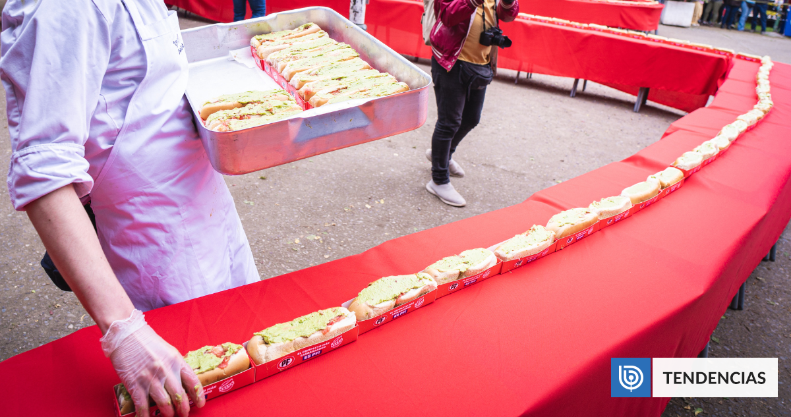
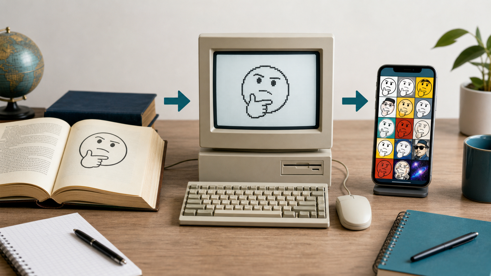
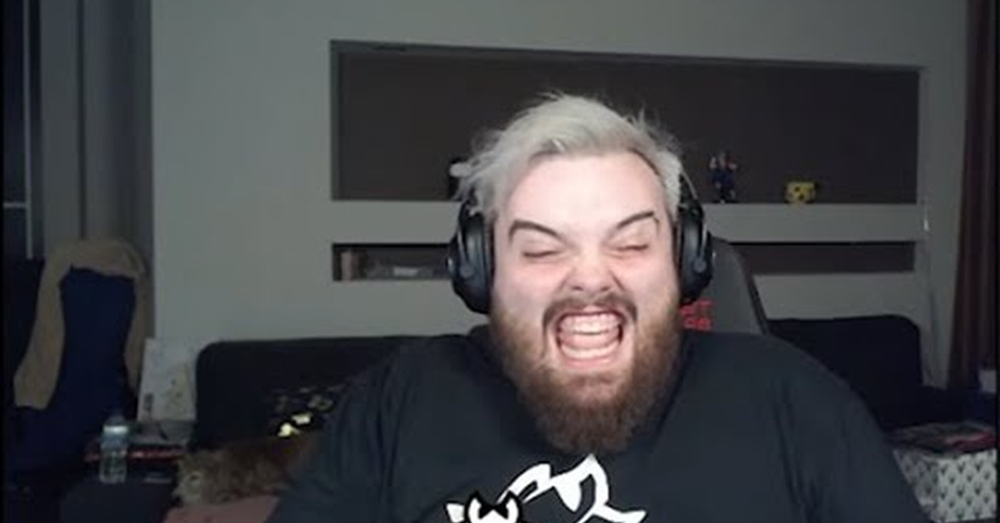

El meme como género discursivo
No es solamente una imagen graciosa: es un texto que depende de convenciones, referencias compartidas, una audiencia y una intención.

Objetivo y producto de la clase
Por qué un meme es un texto y qué convenciones permiten reconocerlo.
Cómo funcionan la plantilla, el contexto, la referencia y el giro humorístico o crítico.
Elaborar un meme en pareja y defender sus decisiones en un plenario breve.
¿Qué necesita saber alguien para entenderlo?
Muestren a su compañero el meme que trajeron. Todavía no digan por qué les parece bueno.
- Descríbanlo literalmente¿Qué imagen, gesto, texto o sonido aparece?
- Identifiquen la referencia¿Qué hecho, personaje, frase o situación hay que conocer?
- Reconozcan el giro¿Dónde aparece la sorpresa, exageración, ironía o comparación?
- Prueben el contexto¿Lo entendería alguien de otro curso, otra ciudad o una generación diferente?
De una idea cultural al meme de internet
- 1976 · una unidad cultural que se replicaRichard Dawkins usa la palabra meme para explicar cómo ciertas ideas, hábitos o expresiones pasan de una persona a otra por imitación.
- Internet acelera la copiaForos, correos y primeras redes permiten repetir una imagen o frase a gran velocidad.
- La copia se convierte en variaciónLos usuarios conservan una parte reconocible y cambian otra para comentar situaciones nuevas.
- Hoy es multimodalPuede combinar imagen, texto, video, audio, gesto, montaje, subtítulos y participación de una comunidad.

Referencia conceptual: Richard Dawkins, The Selfish Gene (1976), y estudios posteriores sobre memes, multimodalidad e intertextualidad.
¿Por qué es un género, igual que una obra dramática?
Un género discursivo es una forma relativamente reconocible de comunicarse en una situación social. Cada género tiene convenciones, participantes y propósitos frecuentes.
| Aspecto | Obra dramática | Meme digital |
|---|---|---|
| Situación | Representación ante espectadores. | Circulación y respuesta dentro de una comunidad. |
| Convenciones | Diálogo, personajes, acotaciones, escenas. | Plantilla o forma reconocible, brevedad, referencia compartida y variación. |
| Relación entre modos | Palabra, cuerpo, voz, espacio y objetos. | Imagen, texto, gesto, audio, montaje y contexto. |
| Propósito | Representar un conflicto y producir un efecto. | Reaccionar, comparar, criticar, identificar o hacer humor. |
| Audiencia | Debe comprender códigos teatrales. | Debe reconocer la referencia y los códigos de la comunidad. |
Las piezas que producen el sentido
- Plantilla o forma reconocibleLa imagen o estructura que puede reutilizarse.
- Parte variableEl texto o edición que conecta la plantilla con una situación nueva.
- ReferenciaEl hecho previo que la audiencia necesita reconocer.
- GiroLa relación inesperada entre la imagen y la nueva situación.
- Propósito y audienciaPara qué se publica y quién debería comprenderlo.
Memes de circulación amplia y memes locales
Circulación amplia
Usan gestos, plantillas o personajes conocidos por comunidades grandes. La risa de Ibai puede funcionar como reacción entre públicos hispanohablantes que reconocen al streamer o el tono exagerado del gesto.
No significa que todo el planeta lo entienda. Siempre existe una comunidad que comparte el código.
Circulación local
Dependen de experiencias de una ciudad, un colegio, un curso o un grupo. El caso del completo de Talca funciona mejor si se conoce la identidad completera de la ciudad y el debate de 2023.
Fuera de ese contexto puede requerir una explicación previa.
Caso local · El “completo más largo” de Talca
- El hechoEl festival reunió más de 2.000 completos en una extensión cercana a 450 metros.
- La expectativaLa expresión “el completo más largo” hizo imaginar a muchos usuarios una sola pieza continua.
- La imagen observadaLas fotografías mostraron completos individuales alineados.
- La transformación meméticaLos usuarios trasladaron esa lógica a otros objetos: “el más largo” podía ser una fila de muchas unidades.
Fuentes del caso: TVN, 22-11-2023 y BioBioChile, 18-11-2023. Imagen: BioBioChile.
Caso de circulación amplia · La risa de Ibai

«Yo cuando el profesor dice que la actividad es breve».
«Mi compañero después de decir “yo hice mi parte” y mandar solo el título».
- Se conservaEl rostro, la risa intensa y la función de reacción.
- Se modificaLa situación que provoca esa reacción.
- Se transfiereUna escena de streaming pasa a representar experiencias escolares.
Imagen de referencia: recopilación “Ibai riéndose”, Memondo/No Tengo Tele. Uso educativo para análisis de cultura digital.
Tarea principal · Crear un meme que funcione
Trabajen en parejas. Elaboren un meme sobre una experiencia escolar, una lectura, una situación de la ciudad o una práctica digital reconocible por el curso.
- Definan la situaciónEscriban en una oración qué experiencia quieren representar.
- Definan audiencia y propósito¿Quién debe entenderlo? ¿Busca hacer humor, criticar, advertir o mostrar identificación?
- Elijan una plantilla pertinentePuede ser una imagen propia, una plantilla conocida o un dibujo. Si usan una foto de alguien del colegio, necesitan su autorización.
- Escriban la parte variableUsen texto breve y preciso. La frase debe activar la referencia, no explicar todo el chiste.
- Construyan el archivoFormato cuadrado o vertical; imagen nítida; recorte intencional; tipografía grande; alto contraste.
- Preparen la defensaEn 30 a 45 segundos expliquen plantilla, referencia, audiencia, propósito y relación entre imagen y texto.
Criterios que debe cumplir
Construcción del texto
- Se entiende la situación que el meme representa.
- Imagen y texto se complementan; no repiten exactamente lo mismo.
- Existe una referencia compartida o se entregan pistas suficientes.
- El propósito y la audiencia pueden reconocerse.
- La propuesta transforma la plantilla y no se limita a copiar otro meme.
Resolución técnica y ética
- El texto se lee a distancia y tiene buen contraste.
- La imagen es nítida, está bien recortada y no aparece deformada.
- La cantidad de palabras es breve y está escrita correctamente.
- No expone datos personales ni utiliza fotografías sin permiso.
- No humilla a un compañero ni usa contenido discriminatorio.
Antes de entregar: prueba con otra pareja
Intercambien el meme sin entregar ninguna explicación. La otra pareja debe responder estas cuatro preguntas.
- ¿Qué situación representa?Descríbanla en una oración.
- ¿Qué referencia hay que reconocer?Nombren el hecho, plantilla o experiencia anterior.
- ¿Qué busca provocar?Humor, crítica, advertencia, identificación u otro efecto.
- ¿Para quién parece estar hecho?Indiquen la audiencia más probable.
La construcción funciona. Revisen solo legibilidad, ortografía y recorte.
No expliquen oralmente el chiste. Modifiquen el texto, la imagen o las pistas hasta que el sentido pueda reconstruirse.
Plenario selectivo y cierre
Presentan entre 5 y 7 parejas
- Proyectan el meme sin explicarloEl curso intenta identificar referencia, propósito y audiencia.
- La pareja defiende sus decisionesDispone de 30 a 45 segundos para explicar cómo construyó el sentido.
- El curso entrega una observaciónDebe referirse a un criterio técnico o discursivo, no solo a si dio risa.